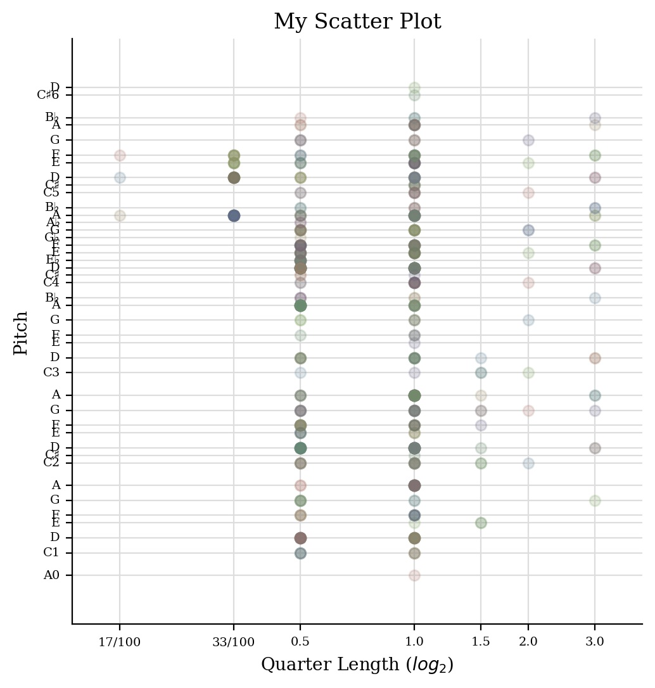

For this task, we have to create a jSymbolic analysis of our chosen piece.
The features I chose, along with their values are listed below
Table 1
| They Crawl |
| Title | THEY CRAWL - Main Theme |
| Artist | Matt Oakley |
| Composer | Matt Oakley |
| Copyright | CC BY-NC-SA |
| Genre | Movie Soundtrack |
| Source | Free Music Archive |
| File/Audio Format | Mp3 |
| Number of Channels | 3 |
| Sample Rate | 44100 |
| Bits per second | 2116800 |
| Duration | 01:29 |
Table 2
| Time Final Remix |
| Title | Time Final Remix |
| Artist | Justin Woodwork Music |
| Composer | Hans Zimmer |
| Copyright | CC BY-NC-SA |
| Genre | Movie Soundtrack |
| Source | Soundcloud |
| File/Audio Format | Mp3 |
| Number of Channels | 2 |
| Sample Rate | 44100 |
| Bits per second | 1411200 |
| Duration | 04:35 |
Table 3
| Now We Are Free |
| Title | Now We Are Free - Gladiator Theme |
| Artist | Rainer Lakmann |
| Composer | Hans Zimmer & Lisa Gerrard |
| Copyright | CC BY-NC-SA |
| Genre | Movie Soundtrack |
| Source | Free Music Archive |
| File/Audio Format | Mp3 |
| Number of Channels | 3 |
| Sample Rate | 44100 |
| Bits per second | 2116800 |
| Duration | 04:15 |
Task 2: Using Python Notebook and Music21 to generate graphs
Histogram

Piano Roll

Scatter Plot
